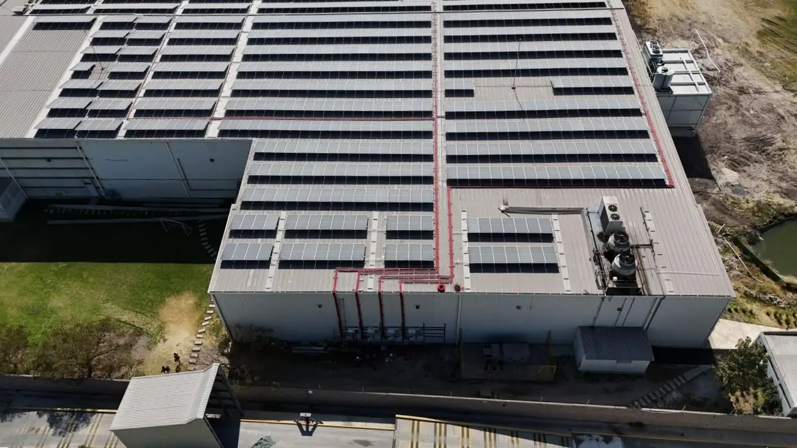
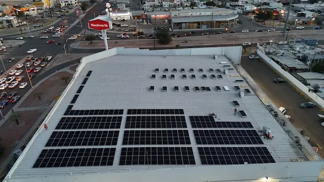
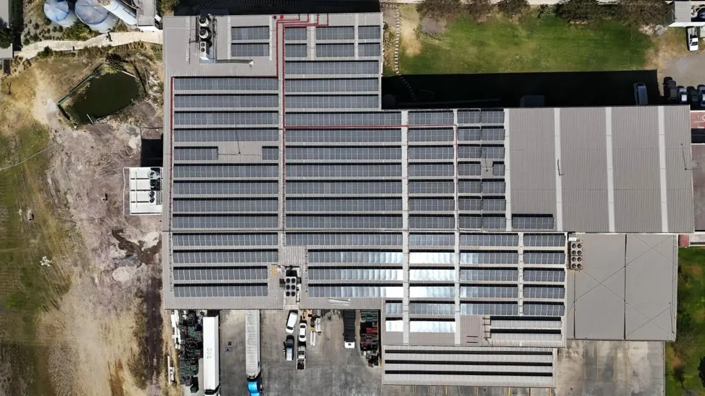
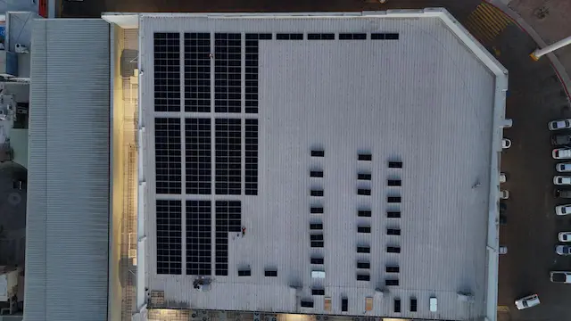
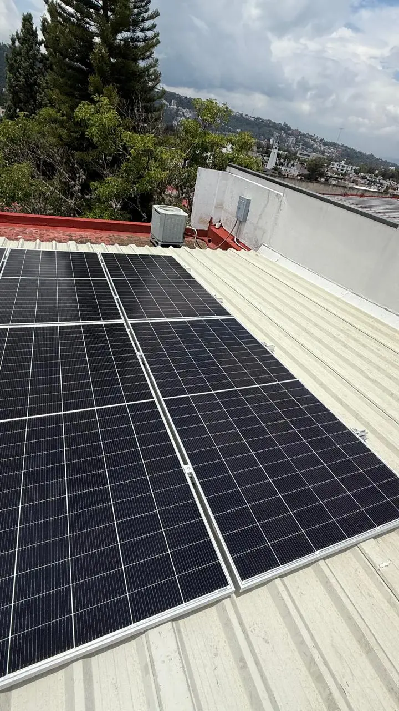
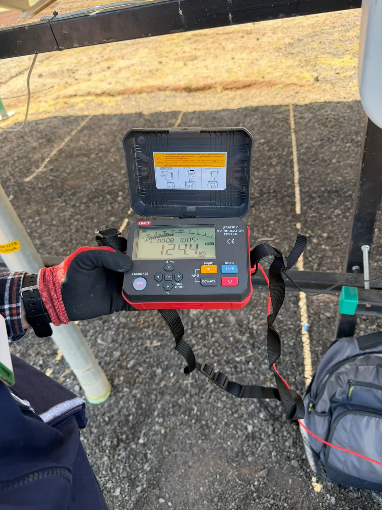
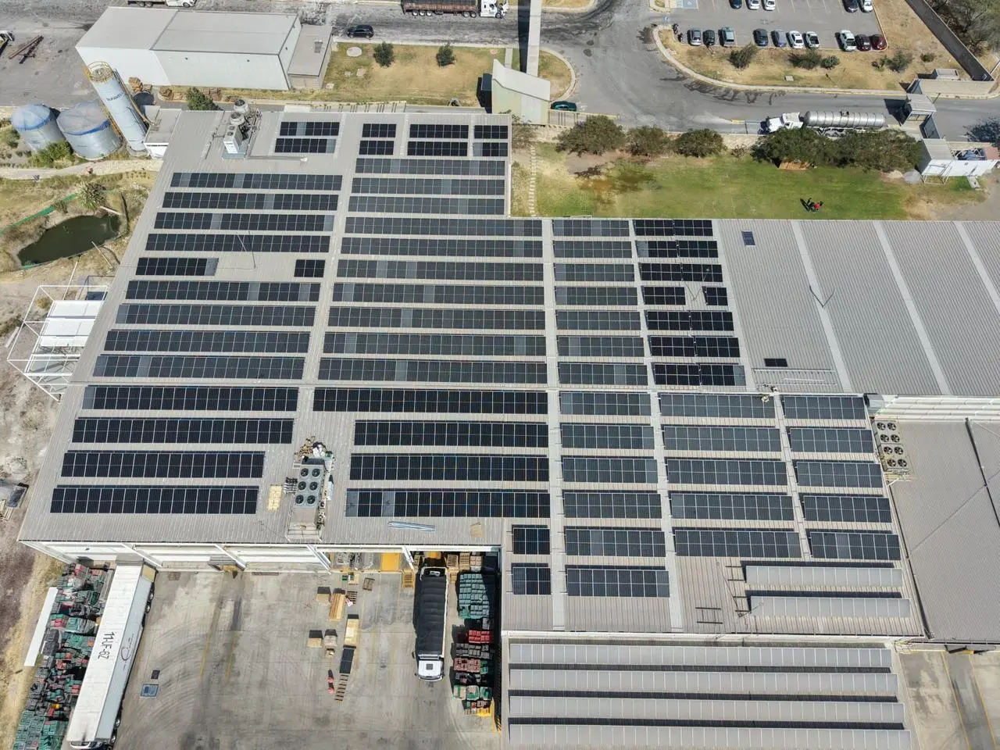

Tecnología aérea para detectar fallas, optimizar el rendimiento y proteger tu inversión solar.
En SolarTech Solutions ofrecemos inspección termográfica aérea mediante drones equipados con cámaras térmicas y visuales, para evaluar las condiciones operativas de los módulos fotovoltaicos de manera precisa, eficiente y sin contacto físico.
Mediante el análisis de imágenes térmicas identificamos anomalías de temperatura que pueden afectar la generación y la integridad de tu central.

Visual Térmica Frío CalienteDesliza para comparar. Vista térmica ilustrativa.
Diferencias de temperatura que pueden estar relacionadas con fallas eléctricas u operativas.
Diagnóstico técnico y mantenimiento predictivo: evaluamos grandes superficies, identificamos posibles fallas y priorizamos acciones para reducir riesgos operativos y pérdidas de generación.

Vuelo con cámaras térmicas y visuales sobre el campo fotovoltaico.

Análisis especializado de las imágenes termográficas obtenidas.

Identificación y clasificación de cada anomalía térmica encontrada.

Evidencia fotográfica, hallazgos y recomendaciones de mantenimiento.

Conoce el estado de tu instalación fotovoltaica y toma decisiones de mantenimiento respaldadas por evidencia técnica.